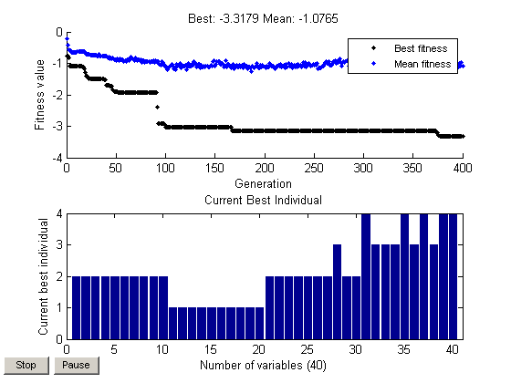
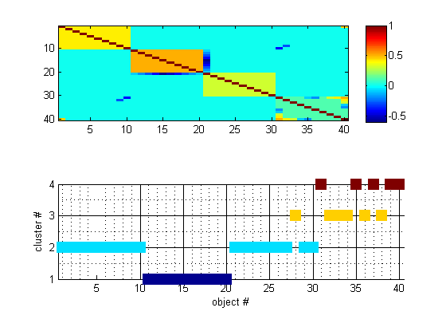

Test Script Genetic Algo solver for Marsili-Giada Model
Name: SECTORS_TEST_ANNEALING_001.M
Authors: Tim Gebbie
This test script is part of the "Sector and State" toolbox SECTOR.ZIP. The data set considered has correlated Assets with four clusters. The test script is developed to show that the algorithm picks up those clusters.
References:
1. J. D. Noh, Phys. Rev. E 61, 5981 (2000) 1. L. Giada & M. Marsili (2005) ... 2. Marsili (2002) ...
See Also: GA, GAMGCONFIG
Contents
Clear the workspace
clear all; clc;
The algorithm used to control the entire algorithm
help gamgconfig
GAMGCONFIG GA configuration solver for the Marsili-Giada spin model Need to find a linkage object specifying which object is in which cluster based on the Marsili-Giada cost function. The algorithm starts with N distinct objects in N clusters. The algorithm iterates this chromosome until it finds the optimal chromosome with the integer valued i-th gene giving the cluster that the i-th object occupies. [X,FVAL] = GAMGCONFIG(C) For correlation matrix C. Compute the chromosome X with the i-th gene giving the cluster that the i-th object occupies. See Also: SLIKELIHOOD, GA
Test 4.1: Correlated data with Four Clusters
C41 = [[ 1, 0.4, 0.4, 0.4, 0.4, 0.4, 0.4, 0.4, 0.4, 0.4, 0,0,0,0,0,0,0,0,0,0, 0,0,0,0,0,0,0,0,0,0, 0,0,0,0,0,0,0,0,0,0.45]; ... [0.4, 1, 0.4, 0.4, 0.4, 0.4, 0.4, 0.4, 0.4, 0.4, 0,0,0,0,0,0,0,0,0,0, 0,0,0,0,0,0,0,0,0,0, 0,0,0,0,0,0,0,0,0,0]; ... [0.4, 0.4, 1, 0.4, 0.4, 0.4, 0.4, 0.4, 0.4, 0.4, 0,0,0,0,0,0,0,0,0,0, 0,0,0,0,0,0,0,0,0,0, 0,0,0,0,0,0,0,0,0,0]; ... [0.4, 0.4, 0.4, 1, 0.4, 0.4, 0.4, 0.4, 0.4, 0.4, 0,0,0,0,0,0,0,0,0,0, 0,0,0,0,0,0,0,0,0,0, 0,0,0,0,0,0,0,0,0,0]; ... [0.4, 0.4, 0.4, 0.4, 1, 0.4, 0.4, 0.4, 0.4, 0.4, 0,0,0,0,0,0,0,0,0,0, 0,0,0,0,0,0,0,0,0,0, 0,0,0,0,0,0,0,0,0,0]; ... [0.4, 0.4, 0.4, 0.4, 0.4, 1, 0.4, 0.4, 0.4, 0.4, 0,0,0,0,0,0,0,0,0,0, 0,0,0,0,0,0,0,0,0,0, 0,0,0,0,0,0,0,0,0,0]; ... [0.4, 0.4, 0.4, 0.4, 0.4, 0.4, 1, 0.4, 0.4, 0.4, 0,0,0,0,0,0,0,0,0,0, 0,0,0,0,0,0,0,0,0,0, 0,0,0,0,0,0,0,0,0,0]; ... [0.4, 0.4, 0.4, 0.4, 0.4, 0.4, 0.4, 1, 0.4, 0.4, 0,0,0,0,0,0,0,0,0,0, 0,0,0,0,0,0,0,0,0,0, 0,0,0,0,0,0,0,0,0,0]; ... [0.4, 0.4, 0.4, 0.4, 0.4, 0.4, 0.4, 0.4, 1, 0.4, 0,0,0,0,0,0,0,0,0,0, 0,0,0,0,0,0,0,0,0,0, 0,-.3,0,0,0,0,0,0,0,0]; ... [0.4, 0.4, 0.4, 0.4, 0.4, 0.4, 0.4, 0.4, 0.4, 1, 0,0,0,0,0,0,0,0,0,0, 0,0,0,0,0,0,0,0,0,0, -.4,0,0,0,0,0,0,0,0,0]; ... [0,0,0,0,0,0,0,0,0,0, 1, 0.5, 0.5, 0.5, 0.5, 0.5, 0.5, 0.5, 0.5, 0.5, -0.1,0,0,0,0,0,0,0,0,0, 0,0,0,0,0,0,0,0,0,0]; ... [0,0,0,0,0,0,0,0,0,0, 0.5, 1, 0.5, 0.5, 0.5, 0.5, 0.5, 0.5, 0.5, 0.5, -0.2,0,0,0,0,0,0,0,0,0, 0,0,0,0,0,0,0,0,0,0]; ... [0,0,0,0,0,0,0,0,0,0, 0.5, 0.5, 1, 0.5, 0.5, 0.5, 0.5, 0.5, 0.5, 0.5, -0.3,0,0,0,0,0,0,0,0,0, 0,0,0,0,0,0,0,0,0,0]; ... [0,0,0,0,0,0,0,0,0,0, 0.5, 0.5, 0.5, 1, 0.5, 0.5, 0.5, 0.5, 0.5, 0.5, -0.4,0,0,0,0,0,0,0,0,0, 0,0,0,0,0,0,0,0,0,0]; ... [0,0,0,0,0,0,0,0,0,0, 0.5, 0.5, 0.5, 0.5, 1, 0.5, 0.5, 0.5, 0.5, 0.5, -0.6,0,0,0,0,0,0,0,0,0, 0,0,0,0,0,0,0,0,0,0]; ... [0,0,0,0,0,0,0,0,0,0, 0.5, 0.5, 0.5, 0.5, 0.5, 1, 0.5, 0.5, 0.5, 0.5, -0.5,0,0,0,0,0,0,0,0,0, 0,0,0,0,0,0,0,0,0,0]; ... [0,0,0,0,0,0,0,0,0,0, 0.5, 0.5, 0.5, 0.5, 0.5, 0.5, 1, 0.5, 0.5, 0.5, -0.4,0,0,0,0,0,0,0,0,0, 0,0,0,0,0,0,0,0,0,0]; ... [0,0,0,0,0,0,0,0,0,0, 0.5, 0.5, 0.5, 0.5, 0.5, 0.5, 0.5, 1, 0.5, 0.5, -0.3,0,0,0,0,0,0,0,0,0, 0,0,0,0,0,0,0,0,0,0]; ... [0,0,0,0,0,0,0,0,0,0, 0.5, 0.5, 0.5, 0.5, 0.5, 0.5, 0.5, 0.5, 1, 0.5, -0.2,0,0,0,0,0,0,0,0,0, 0,0,0,0,0,0,0,0,0,0]; ... [0,0,0,0,0,0,0,0,0,0, 0.5, 0.5, 0.5, 0.5, 0.5, 0.5, 0.5, 0.5, 0.5, 1, -0.1,0,0,0,0,0,0,0,0,0, 0,0,0,0,0,0,0,0,0,0]; ... [0,0,0,0,0,0,0,0,0,0, -.1,-.2,-.3,-.4,-.6,-.5,-.4,-.3,-.2,-0.1, 1, 0.3, 0.3, 0.3, 0.3, 0.3, 0.3, 0.3, 0.3, 0.3, 0,0,0,0,0,0,0,0,0,0]; ... [0,0,0,0,0,0,0,0,0,0, 0,0,0,0,0,0,0,0,0,0, 0.3, 1, 0.3, 0.3, 0.3, 0.3, 0.3, 0.3, 0.3, 0.3, 0,0,0,0,0,0,0,0,0,0]; ... [0,0,0,0,0,0,0,0,0,0, 0,0,0,0,0,0,0,0,0,0, 0.3, 0.3, 1, 0.3, 0.3, 0.3, 0.3, 0.3, 0.3, 0.3, 0,0,0,0,0,0,0,0,0,0]; ... [0,0,0,0,0,0,0,0,0,0, 0,0,0,0,0,0,0,0,0,0, 0.3, 0.3, 0.3, 1, 0.3, 0.3, 0.3, 0.3, 0.3, 0.3, 0,0,0,0,0,0,0,0,0,0]; ... [0,0,0,0,0,0,0,0,0,0, 0,0,0,0,0,0,0,0,0,0, 0.3, 0.3, 0.3, 0.3, 1, 0.3, 0.3, 0.3, 0.3, 0.3, 0,0,0,0,0,0,0,0,0,0]; ... [0,0,0,0,0,0,0,0,0,0, 0,0,0,0,0,0,0,0,0,0, 0.3, 0.3, 0.3, 0.3, 0.3, 1, 0.3, 0.3, 0.3, 0.3, 0,0,0,0,0,0,0,0,0,0]; ... [0,0,0,0,0,0,0,0,0,0, 0,0,0,0,0,0,0,0,0,0, 0.3, 0.3, 0.3, 0.3, 0.3, 0.3, 1, 0.3, 0.3, 0.3, 0,0,0,0,0,0,0,0,0,0]; ... [0,0,0,0,0,0,0,0,0,0, 0,0,0,0,0,0,0,0,0,0, 0.3, 0.3, 0.3, 0.3, 0.3, 0.3, 0.3, 1, 0.3, 0.3, 0,0,0,0,0,0,0,0,0,0]; ... [0,0,0,0,0,0,0,0,0,0, 0,0,0,0,0,0,0,0,0,0, 0.3, 0.3, 0.3, 0.3, 0.3, 0.3, 0.3, 0.3, 1, 0.3, 0,0,0,0,0,0,0,0,0,0]; ... [0,0,0,0,0,0,0,0,0,0, 0,0,0,0,0,0,0,0,0,0, 0.3, 0.3, 0.3, 0.3, 0.3, 0.3, 0.3, 0.3, 0.3, 1, 0,0,0,0,0,0,0,0,0,0]; ... [0,0,0,0,0,0,0,0,0,-0.4, 0,0,0,0,0,0,0,0,0,0, 0,0,0,0,0,0,0,0,0,0, 1, 0.1, 0.1, 0.1,-0.1,-0.2, 0.1, 0.3, 0.4, 0.5]; ... [0,0,0,0,0,0,0,0,-.3,0, 0,0,0,0,0,0,0,0,0,0, 0,0,0,0,0,0,0,0,0,0, 0.1, 1, 0.1, 0.1, 0.1, 0.1, 0.1, 0.1, 0.1, 0.4]; ... [0,0,0,0,0,0,0,0,0,0, 0,0,0,0,0,0,0,0,0,0, 0,0,0,0,0,0,0,0,0,0, 0.1, 0.1, 1, 0.1, 0.1, 0.1, 0.1, 0.1, 0.1, 0.3]; ... [0,0,0,0,0,0,0,0,0,0, 0,0,0,0,0,0,0,0,0,0, 0,0,0,0,0,0,0,0,0,0, 0.1, 0.1, 0.1, 1, 0.1, 0.1, 0.1, 0.1, 0.1,-0.1]; ... [0,0,0,0,0,0,0,0,0,0, 0,0,0,0,0,0,0,0,0,0, 0,0,0,0,0,0,0,0,0,0, 0.1, 0.1, 0.1, 0.1, 1, 0.1, 0.1, 0.1, 0.1,-0.2]; ... [0,0,0,0,0,0,0,0,0,0, 0,0,0,0,0,0,0,0,0,0, 0,0,0,0,0,0,0,0,0,0, -0.2, 0.1, 0.1, 0.1, 0.1, 1, 0.1, 0.1, 0.1, 0.1]; ... [0,0,0,0,0,0,0,0,0,0, 0,0,0,0,0,0,0,0,0,0, 0,0,0,0,0,0,0,0,0,0, -0.1, 0.1, 0.1, 0.1, 0.1, 0.1, 1, 0.1, 0.1, 0.1]; ... [0,0,0,0,0,0,0,0,0,0, 0,0,0,0,0,0,0,0,0,0, 0,0,0,0,0,0,0,0,0,0, 0.3, 0.1, 0.1, 0.1, 0.1, 0.1, 0.1, 1, 0.1, 0.1]; ... [0,0,0,0,0,0,0,0,0,0, 0,0,0,0,0,0,0,0,0,0, 0,0,0,0,0,0,0,0,0,0, 0.4, 0.1, 0.1, 0.1, 0.1, 0.1, 0.1, 0.1, 1, 0.1]; ... [0.45,0,0,0,0,0,0,0,0,0, 0,0,0,0,0,0,0,0,0,0, 0,0,0,0,0,0,0,0,0,0, 0.5, 0.4, 0.3,-0.1,-0.2, 0.1, 0.1, 0.1, 0.1, 1]];
Test 4.1.1: Use ANNEALING to generate clusters from the correlations
[x,fval]=gamgconfig(C41);
Best Mean Stall
Generation f-count f(x) f(x) Generations
1 600 -0.7773 -0.4261 0
2 900 -0.8309 -0.5613 0
3 1200 -1.084 -0.5994 0
4 1500 -1.084 -0.5966 1
5 1800 -1.084 -0.6465 2
6 2100 -1.089 -0.6661 0
7 2400 -1.089 -0.6515 1
8 2700 -1.089 -0.6575 2
9 3000 -1.089 -0.6553 3
10 3300 -1.089 -0.642 4
11 3600 -1.089 -0.6238 5
12 3900 -1.089 -0.6205 6
13 4200 -1.089 -0.6148 7
14 4500 -1.089 -0.629 8
15 4800 -1.089 -0.6277 9
16 5100 -1.112 -0.6208 0
17 5400 -1.112 -0.623 1
18 5700 -1.178 -0.6188 0
19 6000 -1.304 -0.6476 0
20 6300 -1.392 -0.7034 0
21 6600 -1.392 -0.701 1
22 6900 -1.447 -0.7078 0
23 7200 -1.491 -0.7008 0
24 7500 -1.491 -0.746 1
25 7800 -1.491 -0.7512 2
26 8100 -1.491 -0.746 3
27 8400 -1.491 -0.7498 4
28 8700 -1.491 -0.7425 5
29 9000 -1.491 -0.7504 6
30 9300 -1.491 -0.7332 7
Best Mean Stall
Generation f-count f(x) f(x) Generations
31 9600 -1.491 -0.7635 8
32 9900 -1.491 -0.7581 9
33 10200 -1.491 -0.721 10
34 10500 -1.491 -0.7541 11
35 10800 -1.491 -0.7681 12
36 11100 -1.491 -0.782 13
37 11400 -1.491 -0.7664 14
38 11700 -1.512 -0.7821 0
39 12000 -1.512 -0.7754 1
40 12300 -1.682 -0.7679 0
41 12600 -1.689 -0.7947 0
42 12900 -1.689 -0.8139 1
43 13200 -1.689 -0.7896 2
44 13500 -1.728 -0.8505 0
45 13800 -1.728 -0.8158 1
46 14100 -1.728 -0.8468 2
47 14400 -1.835 -0.8262 0
48 14700 -1.887 -0.8958 0
49 15000 -1.888 -0.8718 0
50 15300 -1.889 -0.9177 0
51 15600 -1.903 -0.8573 0
52 15900 -1.92 -0.8936 0
53 16200 -1.923 -0.9041 0
54 16500 -1.923 -0.8505 1
55 16800 -1.923 -0.8977 2
56 17100 -1.923 -0.8919 3
57 17400 -1.923 -0.884 4
58 17700 -1.923 -0.9368 5
59 18000 -1.923 -0.9088 6
60 18300 -1.923 -0.9412 7
Best Mean Stall
Generation f-count f(x) f(x) Generations
61 18600 -1.923 -0.8756 8
62 18900 -1.923 -0.8859 9
63 19200 -1.923 -0.9001 10
64 19500 -1.923 -0.8533 11
65 19800 -1.923 -0.8053 12
66 20100 -1.923 -0.8336 13
67 20400 -1.923 -0.847 14
68 20700 -1.923 -0.8941 15
69 21000 -1.923 -0.9045 16
70 21300 -1.923 -0.8238 17
71 21600 -1.923 -0.9083 18
72 21900 -1.923 -0.8834 19
73 22200 -1.923 -0.8882 20
74 22500 -1.923 -0.9112 21
75 22800 -1.923 -0.8913 22
76 23100 -1.923 -0.9585 23
77 23400 -1.923 -0.9191 24
78 23700 -1.923 -0.9067 25
79 24000 -1.923 -0.9752 26
80 24300 -1.923 -0.9456 27
81 24600 -1.923 -0.9433 28
82 24900 -1.923 -0.9401 29
83 25200 -1.923 -0.9554 30
84 25500 -1.923 -0.9614 31
85 25800 -1.923 -0.9338 32
86 26100 -1.923 -0.9546 33
87 26400 -1.923 -0.9523 34
88 26700 -1.923 -0.908 35
89 27000 -1.923 -0.9668 36
90 27300 -1.923 -0.9089 37
Best Mean Stall
Generation f-count f(x) f(x) Generations
91 27600 -1.923 -0.9291 38
92 27900 -2.401 -0.95 0
93 28200 -2.908 -0.9524 0
94 28500 -2.908 -1.031 1
95 28800 -2.908 -1.046 2
96 29100 -2.908 -0.9336 3
97 29400 -2.908 -0.9768 4
98 29700 -2.908 -1.034 5
99 30000 -2.954 -1.089 0
100 30300 -3.029 -1.078 0
101 30600 -3.029 -1.142 1
102 30900 -3.029 -1.204 2
103 31200 -3.029 -1.132 3
104 31500 -3.029 -1.116 4
105 31800 -3.029 -1.078 5
106 32100 -3.029 -1.035 6
107 32400 -3.029 -1.085 7
108 32700 -3.029 -1.159 8
109 33000 -3.029 -1.133 9
110 33300 -3.029 -1.197 10
111 33600 -3.029 -1.038 11
112 33900 -3.029 -1.101 12
113 34200 -3.029 -1.07 13
114 34500 -3.029 -1.059 14
115 34800 -3.029 -1.014 15
116 35100 -3.029 -1.144 16
117 35400 -3.029 -1.051 17
118 35700 -3.029 -1.083 18
119 36000 -3.029 -1.098 19
120 36300 -3.029 -1.063 20
Best Mean Stall
Generation f-count f(x) f(x) Generations
121 36600 -3.029 -1.206 21
122 36900 -3.029 -1.103 22
123 37200 -3.029 -0.9924 23
124 37500 -3.029 -1.088 24
125 37800 -3.029 -1.083 25
126 38100 -3.029 -1.081 26
127 38400 -3.029 -1.017 27
128 38700 -3.029 -1.071 28
129 39000 -3.029 -0.9418 29
130 39300 -3.029 -1.005 30
131 39600 -3.029 -1.13 31
132 39900 -3.029 -1.076 32
133 40200 -3.029 -1.019 33
134 40500 -3.029 -1.016 34
135 40800 -3.029 -1.154 35
136 41100 -3.029 -1.069 36
137 41400 -3.029 -1.12 37
138 41700 -3.029 -1.122 38
139 42000 -3.029 -1.073 39
140 42300 -3.029 -1.123 40
141 42600 -3.029 -1.081 41
142 42900 -3.029 -1.088 42
143 43200 -3.029 -1.111 43
144 43500 -3.029 -1.121 44
145 43800 -3.029 -1.09 45
146 44100 -3.029 -1.061 46
147 44400 -3.029 -1.075 47
148 44700 -3.029 -0.9515 48
149 45000 -3.029 -0.9136 49
150 45300 -3.029 -1.082 50
Best Mean Stall
Generation f-count f(x) f(x) Generations
151 45600 -3.029 -1.042 51
152 45900 -3.029 -0.9562 52
153 46200 -3.029 -0.9448 53
154 46500 -3.029 -0.956 54
155 46800 -3.029 -1.026 55
156 47100 -3.029 -1.032 56
157 47400 -3.029 -0.9963 57
158 47700 -3.029 -1.032 58
159 48000 -3.029 -1.102 59
160 48300 -3.029 -1.076 60
161 48600 -3.029 -0.9077 61
162 48900 -3.029 -1.127 62
163 49200 -3.029 -1.034 63
164 49500 -3.029 -1.032 64
165 49800 -3.029 -1.091 65
166 50100 -3.029 -1.148 66
167 50400 -3.15 -1.125 0
168 50700 -3.15 -1.023 1
169 51000 -3.15 -1.185 2
170 51300 -3.15 -1.12 3
171 51600 -3.15 -1.092 4
172 51900 -3.15 -1.045 5
173 52200 -3.15 -1.113 6
174 52500 -3.15 -1.123 7
175 52800 -3.15 -1.066 8
176 53100 -3.15 -1.116 9
177 53400 -3.15 -1.049 10
178 53700 -3.15 -1.152 11
179 54000 -3.15 -1.04 12
180 54300 -3.15 -1.045 13
Best Mean Stall
Generation f-count f(x) f(x) Generations
181 54600 -3.15 -1.081 14
182 54900 -3.15 -1.093 15
183 55200 -3.15 -1.163 16
184 55500 -3.15 -1.102 17
185 55800 -3.15 -1.106 18
186 56100 -3.15 -1.158 19
187 56400 -3.15 -1.254 20
188 56700 -3.15 -1.089 21
189 57000 -3.15 -1.152 22
190 57300 -3.15 -1.107 23
191 57600 -3.15 -1.096 24
192 57900 -3.15 -1.002 25
193 58200 -3.15 -1.083 26
194 58500 -3.15 -1.156 27
195 58800 -3.15 -1.15 28
196 59100 -3.15 -1.056 29
197 59400 -3.15 -1.11 30
198 59700 -3.15 -1.047 31
199 60000 -3.15 -1.095 32
200 60300 -3.15 -1.106 33
201 60600 -3.15 -1.156 34
202 60900 -3.15 -1.073 35
203 61200 -3.15 -1.112 36
204 61500 -3.15 -1.123 37
205 61800 -3.15 -1.009 38
206 62100 -3.15 -1.049 39
207 62400 -3.15 -1.095 40
208 62700 -3.15 -1.094 41
209 63000 -3.157 -1.075 0
210 63300 -3.157 -1.126 1
Best Mean Stall
Generation f-count f(x) f(x) Generations
211 63600 -3.157 -1.163 2
212 63900 -3.157 -1.08 3
213 64200 -3.157 -1.078 4
214 64500 -3.157 -1.062 5
215 64800 -3.157 -1.09 6
216 65100 -3.157 -1.034 7
217 65400 -3.157 -1.12 8
218 65700 -3.157 -1.083 9
219 66000 -3.157 -1.078 10
220 66300 -3.157 -1.044 11
221 66600 -3.157 -1.144 12
222 66900 -3.157 -1.035 13
223 67200 -3.157 -1.117 14
224 67500 -3.157 -1.001 15
225 67800 -3.157 -1.081 16
226 68100 -3.157 -1.099 17
227 68400 -3.157 -1.027 18
228 68700 -3.157 -1.133 19
229 69000 -3.157 -1.08 20
230 69300 -3.157 -1.064 21
231 69600 -3.157 -1.115 22
232 69900 -3.157 -1.056 23
233 70200 -3.157 -1.13 24
234 70500 -3.157 -1.02 25
235 70800 -3.157 -1.091 26
236 71100 -3.157 -1.049 27
237 71400 -3.157 -1.105 28
238 71700 -3.157 -1.084 29
239 72000 -3.157 -0.9767 30
240 72300 -3.157 -1.079 31
Best Mean Stall
Generation f-count f(x) f(x) Generations
241 72600 -3.157 -0.9667 32
242 72900 -3.157 -1.104 33
243 73200 -3.157 -1.059 34
244 73500 -3.157 -1.042 35
245 73800 -3.157 -1.008 36
246 74100 -3.157 -1.033 37
247 74400 -3.157 -1.079 38
248 74700 -3.157 -1.049 39
249 75000 -3.157 -1.017 40
250 75300 -3.157 -1.058 41
251 75600 -3.157 -1.03 42
252 75900 -3.157 -1.056 43
253 76200 -3.157 -1.01 44
254 76500 -3.157 -1.171 45
255 76800 -3.157 -1.149 46
256 77100 -3.157 -1.131 47
257 77400 -3.157 -1.143 48
258 77700 -3.157 -1.127 49
259 78000 -3.157 -1.079 50
260 78300 -3.157 -1.024 51
261 78600 -3.157 -0.9681 52
262 78900 -3.157 -0.9466 53
263 79200 -3.157 -1.002 54
264 79500 -3.157 -0.9918 55
265 79800 -3.157 -0.9402 56
266 80100 -3.157 -1.052 57
267 80400 -3.157 -1.05 58
268 80700 -3.157 -1.044 59
269 81000 -3.157 -1.012 60
270 81300 -3.157 -0.9505 61
Best Mean Stall
Generation f-count f(x) f(x) Generations
271 81600 -3.157 -0.9255 62
272 81900 -3.157 -1.003 63
273 82200 -3.157 -0.9484 64
274 82500 -3.157 -0.9812 65
275 82800 -3.157 -0.8808 66
276 83100 -3.157 -0.8568 67
277 83400 -3.157 -0.9572 68
278 83700 -3.157 -1.082 69
279 84000 -3.157 -0.9719 70
280 84300 -3.157 -0.953 71
281 84600 -3.157 -0.9659 72
282 84900 -3.157 -0.951 73
283 85200 -3.157 -0.907 74
284 85500 -3.157 -0.8794 75
285 85800 -3.157 -1.085 76
286 86100 -3.157 -1.004 77
287 86400 -3.157 -1.023 78
288 86700 -3.157 -1.024 79
289 87000 -3.157 -1.011 80
290 87300 -3.157 -1.014 81
291 87600 -3.157 -0.9956 82
292 87900 -3.157 -1.035 83
293 88200 -3.157 -0.8842 84
294 88500 -3.157 -0.9754 85
295 88800 -3.157 -0.9335 86
296 89100 -3.157 -0.9526 87
297 89400 -3.157 -1.058 88
298 89700 -3.157 -0.9684 89
299 90000 -3.157 -0.9224 90
300 90300 -3.157 -0.9161 91
Best Mean Stall
Generation f-count f(x) f(x) Generations
301 90600 -3.157 -0.9092 92
302 90900 -3.157 -0.9623 93
303 91200 -3.157 -0.9741 94
304 91500 -3.157 -1.02 95
305 91800 -3.157 -0.9511 96
306 92100 -3.157 -1.034 97
307 92400 -3.157 -0.9393 98
308 92700 -3.157 -1.019 99
309 93000 -3.157 -0.97 100
310 93300 -3.157 -0.9705 101
311 93600 -3.157 -1.006 102
312 93900 -3.157 -0.963 103
313 94200 -3.157 -0.9646 104
314 94500 -3.157 -0.9862 105
315 94800 -3.157 -0.9872 106
316 95100 -3.157 -0.9489 107
317 95400 -3.157 -0.8871 108
318 95700 -3.157 -0.9722 109
319 96000 -3.157 -0.9217 110
320 96300 -3.157 -1.045 111
321 96600 -3.157 -0.9612 112
322 96900 -3.157 -0.9944 113
323 97200 -3.157 -0.9504 114
324 97500 -3.157 -0.998 115
325 97800 -3.157 -0.9587 116
326 98100 -3.157 -1.008 117
327 98400 -3.157 -0.9601 118
328 98700 -3.157 -0.9857 119
329 99000 -3.157 -0.9594 120
330 99300 -3.157 -1.009 121
Best Mean Stall
Generation f-count f(x) f(x) Generations
331 99600 -3.157 -1.005 122
332 99900 -3.157 -1.055 123
333 100200 -3.157 -1.031 124
334 100500 -3.157 -1.005 125
335 100800 -3.157 -0.9773 126
336 101100 -3.157 -1.057 127
337 101400 -3.157 -1.053 128
338 101700 -3.157 -1.037 129
339 102000 -3.157 -1.018 130
340 102300 -3.157 -1.005 131
341 102600 -3.157 -1.113 132
342 102900 -3.157 -1.012 133
343 103200 -3.157 -1.002 134
344 103500 -3.157 -1.061 135
345 103800 -3.157 -1.067 136
346 104100 -3.157 -1.092 137
347 104400 -3.157 -0.9721 138
348 104700 -3.157 -1.099 139
349 105000 -3.157 -1.058 140
350 105300 -3.157 -0.9923 141
351 105600 -3.157 -0.9643 142
352 105900 -3.157 -1.117 143
353 106200 -3.157 -1.079 144
354 106500 -3.157 -1.067 145
355 106800 -3.157 -1.032 146
356 107100 -3.157 -1.075 147
357 107400 -3.157 -1.052 148
358 107700 -3.157 -1.006 149
359 108000 -3.157 -1.047 150
360 108300 -3.157 -1.018 151
Best Mean Stall
Generation f-count f(x) f(x) Generations
361 108600 -3.157 -1.095 152
362 108900 -3.157 -1.027 153
363 109200 -3.157 -1.167 154
364 109500 -3.157 -1.01 155
365 109800 -3.157 -0.9932 156
366 110100 -3.157 -0.9869 157
367 110400 -3.157 -0.977 158
368 110700 -3.157 -1.063 159
369 111000 -3.157 -0.979 160
370 111300 -3.157 -1.025 161
371 111600 -3.157 -0.9434 162
372 111900 -3.157 -0.8726 163
373 112200 -3.157 -0.9857 164
374 112500 -3.198 -0.9902 0
375 112800 -3.198 -0.9891 1
376 113100 -3.285 -1.046 0
377 113400 -3.318 -0.9976 0
378 113700 -3.318 -1.023 1
379 114000 -3.318 -1.021 2
380 114300 -3.318 -1.105 3
381 114600 -3.318 -1.024 4
382 114900 -3.318 -1.01 5
383 115200 -3.318 -1.037 6
384 115500 -3.318 -1 7
385 115800 -3.318 -0.9602 8
386 116100 -3.318 -0.9915 9
387 116400 -3.318 -1.037 10
388 116700 -3.318 -1.014 11
389 117000 -3.318 -1.048 12
390 117300 -3.318 -1.102 13
Best Mean Stall
Generation f-count f(x) f(x) Generations
391 117600 -3.318 -0.9611 14
392 117900 -3.318 -1.036 15
393 118200 -3.318 -1.075 16
394 118500 -3.318 -1.006 17
395 118800 -3.318 -1.133 18
396 119100 -3.318 -1.051 19
397 119400 -3.318 -1.005 20
398 119700 -3.318 -1.093 21
399 120000 -3.318 -0.9834 22
400 120300 -3.318 -1.076 23
Optimization terminated: maximum number of generations exceeded.
 Display covariance
figure; subplot(2,1,1); imagesc(C41); colorbar; subplot(2,1,2); scatter(1:length(x),x,150,x,'filled','s'); set(gca,'XLim',[0.5 40.5]); ylabel('cluster #'); xlabel('object #'); grid minor;